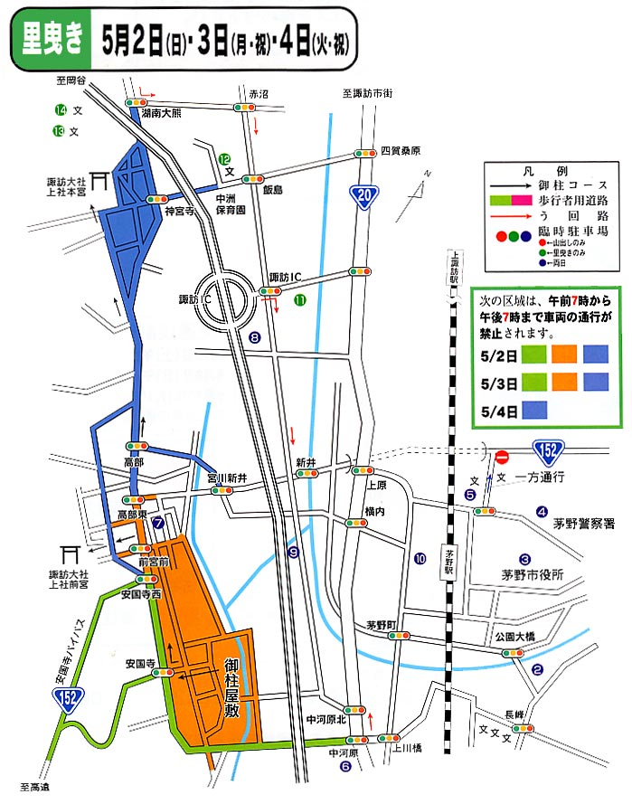

Галерея краян
Click on links below to see Kraiany Gallery
|
Проведення Онбашіра в 2004 році:
Загальний розклад
●諏訪大社 上社
上社
御柱 |
曳行担当地区 |
山出し（4月2日〜4日） |
里曳き（5月2日〜4日） |
綱置場
出発 |
木落とし |
川越し |
御柱屋敷
到着 |
御柱屋敷
出発 |
建て御柱 |
| 本宮一 |
茅野市玉川・豊平 |
2日8：00 |
3日10：00 |
3日14：00 |
3日15：00 |
2日9：00 |
4日14：00 |
| 本宮二 |
諏訪市中洲・湖南 |
2日8：00 |
3日12：50 |
3日16：00 |
3日17：00 |
2日9：50 |
4日13：00 |
| 本宮三 |
富士見町富士見・茅野市金沢 |
2日8：00 |
4日9：30 |
4日12：30 |
4日14：00 |
2日10：40 |
4日15：00 |
| 本宮四 |
茅野市ちの・宮川 |
2日8：30 |
4日12：00 |
4日15：00 |
4日16：00 |
2日11：30 |
4日16：00 |
| 前宮一 |
茅野市湖東・北山・米沢 |
2日8：00 |
3日11：20 |
3日15：00 |
3日16：00 |
2日12：20 |
3日12：00 |
| 前宮二 |
茅野市泉野・原村 |
2日8：00 |
3日14：00 |
4日10：00 |
4日12：00 |
2日13：10 |
3日13：00 |
| 前宮三 |
富士見町本郷・境・落合 |
2日8：30 |
4日10：30 |
4日14：00 |
4日15：00 |
2日14：00 |
3日14：00 |
| 前宮四 |
諏訪市豊田・四賀 |
2日8：30 |
4日13：30 |
4日16：00 |
4日17：00 |
2日14：50 |
3日15：00 |
●諏訪大社 下社
下社
御柱 |
曳行担当地区
（期間中に変動） |
山出し（4月9日〜10日） |
里曳き（5月8日〜10日） |
| 棚木場出発 |
木落とし |
注連掛到着 |
注連掛出発 |
建て御柱 |
| 秋宮一 |
下諏訪（1,2,3,7,9区）→岡谷川岸→諏訪市上諏訪地区 |
10日9：30 |
11日15：00 |
11日17：30 |
8日10：30 |
10日 |
| 秋宮二 |
諏訪市上諏訪地区→岡谷市湊・川岸・長地 |
9日8：30 |
9日15：45 |
9日18：00 |
8日10：30 |
10日 |
| 秋宮三 |
下諏訪町（4,5,6,8,10区）→同町（2,3区）→岡谷市旧市内全地区 |
10日9：00 |
11日13：00 |
11日15：30 |
8日11：00 |
10日 |
| 秋宮四 |
岡谷市旧市内（岡谷、新屋敷、小尾口）→下諏訪町（4、5、8、10区）→同町全区 |
10日7：30 |
10日13：00 |
10日15：30 |
8日13：00 |
10日 |
| 春宮一 |
岡谷市旧市内（小井川、小口、今井、西堀、間下、上浜、下浜）→同市旧市内全地区 |
10日8：00 |
10日15：00 |
10日17：30 |
8日 8：30 |
8日 |
| 春宮二 |
岡谷市長地 |
10日8：30 |
11日11：00 |
11日12：30 |
8日 9：00 |
9日 |
| 春宮三 |
岡谷市川岸→下諏訪町（1,6,7,9区） |
9日8：00 |
9日14：15 |
9日16：30 |
8日 9：00 |
10日 |
| 春宮四 |
岡谷市湊 |
9日7：30 |
9日12：45 |
9日15：00 |
8日10：00 |
9日 |
2-4 травня 2004:

Створений : dmytro.
останні зміни: Понеділок 17 з May, 2004 21:26:59 JST dmytro.
|
![[ Japanese flag ]](../images/jp.png)

![[ Ukranian flag ]](../images/uk.png)